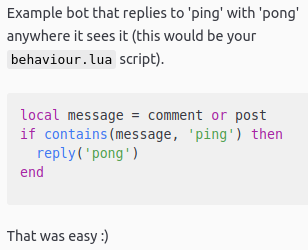
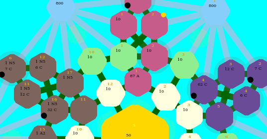
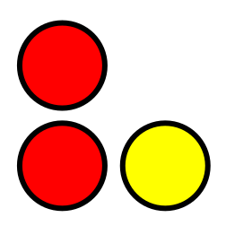

I'm currently a computer science university student looking for an internship next academic year. Some of my projects are listed below:
AvatarMC.com
In my spare time I have been developing in Java as part of a small team at AvatarMC.com for 3 years. I've worked on several projects over the holidays, often developing a minimum viable product or specific feature before I go back. I started with little knowledge of object orientated programming and version control and have since learnt a lot in these areas. The projects have complemented my more theoretical content at University, in particular: graph theory, sorting and complexity analysis.

Web Extensions [1] [2]
As of 2018/10/20 my two WebExtensions have a combined user count of 1992. I developed both to improve my workflow, they aid in duplicating tabs and accessing images on a page respectively. The main challenge for me was learning how to use the WebExtension APIs. They both receive feature requests every now and then and I'm glad people found them useful.
I had built a simple comment reply based Reddit bot before in Python but found it quite hard to maintain. I decided to make a new bot and separate the Reddit library logic from the comment reply behaviour. I also wanted to learn more Rust and this was the perfect size for a new project, so I developed the bot in Rust and configured its behaviour via a Lua script. Unfortunately the only viable Reddit library for Rust was somewhat abandoned and was preventing me from cloning a struct I needed to duplicate (Rust moves values by default and no Clone trait was defined by the lib). I found a fork of the library which had fixed the lack of Clone for a different struct so I forked that fork and pull requested the fix. The bot has been ticking along with minimal maintenance for several months now and I can edit the Lua script to add more reply triggers and actions without having to think about the Reddit library calls.

Dissertation
At the time of writing I have only just begun my Dissertation in automatically detecting accessibility issues in websites. I've started thinking about the WCAG and the alternative ways some people access online content, as well as what can and can't be programmatically detected. I already knew about text contrast but very little about keyboard traps and screen readers. You may not have noticed that you can tab through these blocks - this page is navigable by the keyboard.
At the start of Summer I had a block of time with few commitments and wanted to 0-100 something. There was also a forum game I played a few years prior that was well defined and deliberately really simple that I had enjoyed playing. I decided to turn it into an automated game on the Web, because UI is easy to design with HTML/CSS compared to desktop applications and a Web format is easily shared. 2500 lines of JavaScript, lots of graph manipulation, lists and maps later and I finished it. To my knowledge the code has 0 bugs and once I cached the results of my breadth first search pathing the game updated very quickly. In hindsight I would split the logic into multiple files if I were to do something similar again, though I think the data and function based approach I took worked better than an object orientated one would have - most concerns were cross cutting.

The last assignment of my Java programming module was a semester long Connect 4 game, initially for playing on the command line and then over a graphical interface. Designing for blocking reads from the console in the first half of the assessment introduced lots of problems for the graphical half which I solved by using multiple threads. The assignment also involved creating an automated Connect 4 player which I implemented as a min-max game state search. Unfortunately the provided code we had to build our assignment on (for automated marking) was never licensed so I cannot distribute my project. Overall I got 91% in the module.

More of my projects can be viewed at GitHub